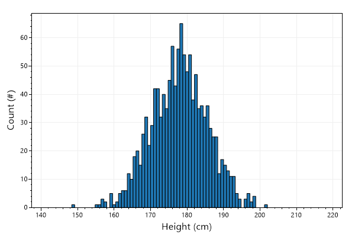
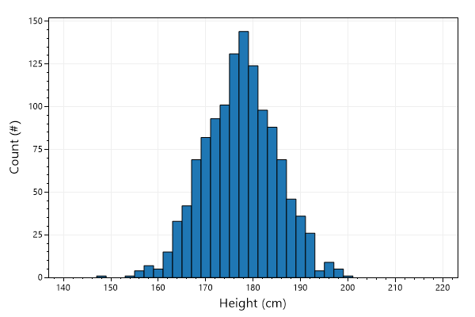
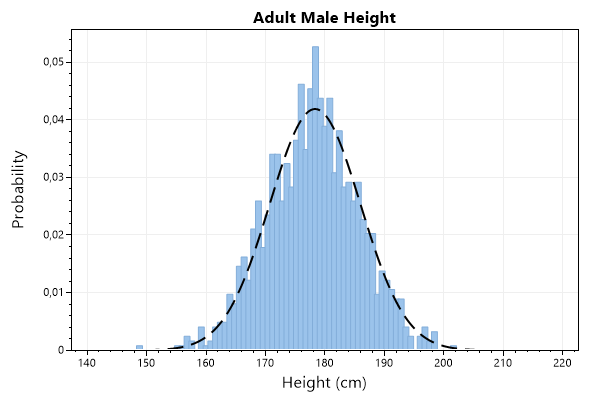
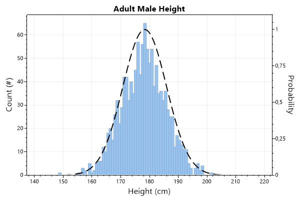
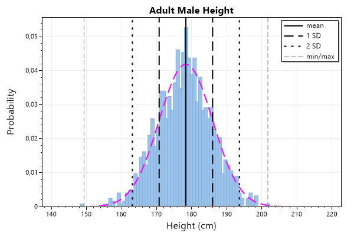
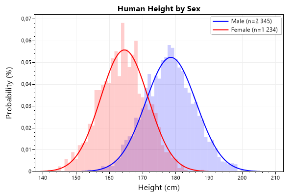
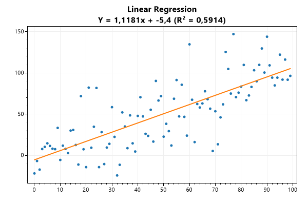
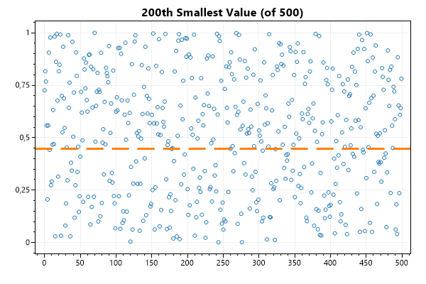
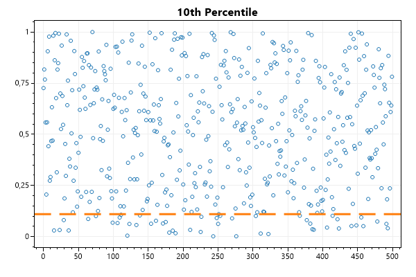
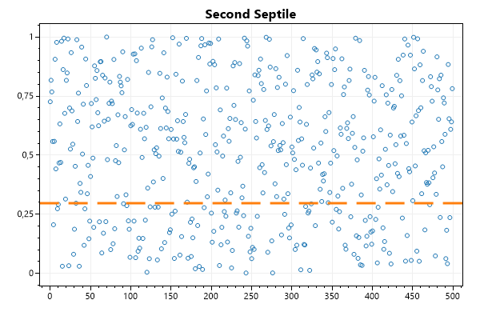

This page contains recipes for the Statistics category.
Visit the Cookbook Home Page to view all cookbook recipes.
Visit the Cookbook Home Page to view all cookbook recipes.
Histogram
The Histogram class provides an easy way to count the number of data values in binned ranges.
var plt = new ScottPlot.Plot(600, 400);
// create a histogram with a fixed number of bins
ScottPlot.Statistics.Histogram hist = new(min: 140, max: 220, binCount: 100);
// add random data to the histogram
Random rand = new(0);
double[] heights = ScottPlot.DataGen.RandomNormal(rand, pointCount: 1234, mean: 178.4, stdDev: 7.6);
hist.AddRange(heights);
// show the histogram counts as a bar plot
plt.AddBar(values: hist.Counts, positions: hist.Bins);
// customize the plot style
plt.YAxis.Label("Count (#)");
plt.XAxis.Label("Height (cm)");
plt.SetAxisLimits(yMin: 0);
plt.SaveFig("stats_histogram.png");

Fixed Size Bins
A histogram can be created using fixed size bins.
var plt = new ScottPlot.Plot(600, 400);
// create a histogram with a fixed number of bins
var hist = ScottPlot.Statistics.Histogram.WithFixedBinSize(min: 140, max: 220, binSize: 2);
// add random data to the histogram
Random rand = new(0);
double[] heights = ScottPlot.DataGen.RandomNormal(rand, pointCount: 1234, mean: 178.4, stdDev: 7.6);
hist.AddRange(heights);
// show the histogram counts as a bar plot
var bar = plt.AddBar(values: hist.Counts, positions: hist.Bins);
bar.BarWidth = 2;
// customize the plot style
plt.YAxis.Label("Count (#)");
plt.XAxis.Label("Height (cm)");
plt.SetAxisLimits(yMin: 0);
plt.SaveFig("stats_histogram_fixed_bins.png");

Probability Histogram
Histograms can be displayed as binned probability instead of binned counts. The ideal probability curve can also be plotted.
var plt = new ScottPlot.Plot(600, 400);
// create a histogram with a fixed number of bins
ScottPlot.Statistics.Histogram hist = new(min: 140, max: 220, binCount: 100);
// add random data to the histogram
Random rand = new(0);
double[] heights = ScottPlot.DataGen.RandomNormal(rand, pointCount: 1234, mean: 178.4, stdDev: 7.6);
hist.AddRange(heights);
// display histogram probabability as a bar plot
double[] probabilities = hist.GetProbability();
var bar = plt.AddBar(values: probabilities, positions: hist.Bins);
bar.BarWidth = 1;
bar.FillColor = ColorTranslator.FromHtml("#9bc3eb");
bar.BorderColor = ColorTranslator.FromHtml("#82add9");
// display histogram probability curve as a line plot
plt.AddFunction(hist.GetProbabilityCurve(heights, true), Color.Black, 2, LineStyle.Dash);
// customize the plot style
plt.Title("Adult Male Height");
plt.YAxis.Label("Probability");
plt.XAxis.Label("Height (cm)");
plt.SetAxisLimits(yMin: 0);
plt.SaveFig("stats_histogramProbability.png");

Histogram Multi-Axis
This example demonstrates how to display a histogram counts on the primary Y axis and the probability curve on the secondary Y axis.
var plt = new ScottPlot.Plot(600, 400);
// create a histogram with a fixed number of bins
ScottPlot.Statistics.Histogram hist = new(min: 140, max: 220, binCount: 100);
// add random data to the histogram
Random rand = new(0);
double[] heights = ScottPlot.DataGen.RandomNormal(rand, pointCount: 1234, mean: 178.4, stdDev: 7.6);
hist.AddRange(heights);
// display histogram probabability as a bar plot
var bar = plt.AddBar(values: hist.Counts, positions: hist.Bins);
bar.BarWidth = 1;
bar.FillColor = ColorTranslator.FromHtml("#9bc3eb");
bar.BorderColor = ColorTranslator.FromHtml("#82add9");
// display histogram probability curve as a line plot
var funcPlot = plt.AddFunction(hist.GetProbabilityCurve(heights), Color.Black, 2, LineStyle.Dash);
funcPlot.YAxisIndex = 1;
// customize the plot style
plt.Title("Adult Male Height");
plt.YAxis.Label("Count (#)");
plt.YAxis2.Label("Probability");
plt.YAxis2.Ticks(true);
plt.XAxis.Label("Height (cm)");
plt.SetAxisLimits(yMin: 0);
plt.SetAxisLimits(yMin: 0, yMax: 1.1, yAxisIndex: 1);
plt.SaveFig("stats_histogramMultiAxis.png");

Histogram Stdev
This example demonstrates how to display a histogram with labeled mean and standard deviations.
var plt = new ScottPlot.Plot(600, 400);
// create a histogram with a fixed number of bins
ScottPlot.Statistics.Histogram hist = new(min: 140, max: 220, binCount: 100);
// add random data to the histogram
Random rand = new(0);
double[] heights = ScottPlot.DataGen.RandomNormal(rand, pointCount: 1234, mean: 178.4, stdDev: 7.6);
hist.AddRange(heights);
// display histogram probabability as a bar plot
double[] probabilities = hist.GetProbability();
var bar = plt.AddBar(values: probabilities, positions: hist.Bins);
bar.BarWidth = 1;
bar.FillColor = ColorTranslator.FromHtml("#9bc3eb");
bar.BorderColor = ColorTranslator.FromHtml("#82add9");
// display histogram probability curve as a line plot
plt.AddFunction(hist.GetProbabilityCurve(heights, true), Color.Magenta, 2, LineStyle.Dash);
// display vertical lines at points of interest
var stats = new ScottPlot.Statistics.BasicStats(heights);
plt.AddVerticalLine(stats.Mean, Color.Black, 2, LineStyle.Solid, "mean");
plt.AddVerticalLine(stats.Mean - stats.StDev, Color.Black, 2, LineStyle.Dash, "1 SD");
plt.AddVerticalLine(stats.Mean + stats.StDev, Color.Black, 2, LineStyle.Dash);
plt.AddVerticalLine(stats.Mean - stats.StDev * 2, Color.Black, 2, LineStyle.Dot, "2 SD");
plt.AddVerticalLine(stats.Mean + stats.StDev * 2, Color.Black, 2, LineStyle.Dot);
plt.AddVerticalLine(stats.Min, Color.Gray, 1, LineStyle.Dash, "min/max");
plt.AddVerticalLine(stats.Max, Color.Gray, 1, LineStyle.Dash);
plt.Legend(location: Alignment.UpperRight);
// customize the plot style
plt.Title("Adult Male Height");
plt.YAxis.Label("Probability");
plt.XAxis.Label("Height (cm)");
plt.SetAxisLimits(yMin: 0);
plt.SaveFig("stats_histogramStdev.png");

Multiple Histograms
This example demonstrates two histograms on the same plot. Note the use of fractional units on the vertical axis, allowing easy comparison of datasets with different numbers of points. Unlike the previous example, this one does not use multiple axes.
var plt = new ScottPlot.Plot(600, 400);
// create a histograms with a fixed number of bins
ScottPlot.Statistics.Histogram histMale = new(min: 140, max: 210, binCount: 70);
ScottPlot.Statistics.Histogram histFemale = new(min: 140, max: 210, binCount: 70);
// add random data to the histogram
Random rand = new(0);
double[] maleHeights = ScottPlot.DataGen.RandomNormal(rand, pointCount: 2345, mean: 178.4, stdDev: 7.6);
double[] femaleHeights = ScottPlot.DataGen.RandomNormal(rand, pointCount: 1234, mean: 164.7, stdDev: 7.1);
histMale.AddRange(maleHeights);
histFemale.AddRange(femaleHeights);
// plot histograms
var barMale = plt.AddBar(values: histMale.GetProbability(), positions: histMale.Bins);
barMale.BarWidth = 1;
barMale.FillColor = Color.FromArgb(50, Color.Blue);
barMale.BorderLineWidth = 0;
var barFemale = plt.AddBar(values: histFemale.GetProbability(), positions: histFemale.Bins);
barFemale.BarWidth = 1;
barFemale.FillColor = Color.FromArgb(50, Color.Red);
barFemale.BorderLineWidth = 0;
// plot probability curves
var maleCurve = plt.AddFunction(histMale.GetProbabilityCurve(maleHeights, true), Color.Blue, 2, LineStyle.Solid);
var femaleCurve = plt.AddFunction(histFemale.GetProbabilityCurve(femaleHeights, true), Color.Red, 2, LineStyle.Solid);
// setup legend
maleCurve.Label = $"Male (n={maleHeights.Length:N0})";
femaleCurve.Label = $"Female (n={femaleHeights.Length:N0})";
plt.Legend(location: ScottPlot.Alignment.UpperRight);
// customize styling
plt.Title("Human Height by Sex");
plt.YLabel("Probability (%)");
plt.XLabel("Height (cm)");
plt.SetAxisLimits(yMin: 0);
plt.SaveFig("stats_histogram2.png");

CPH
This example demonstrates how to plot a cumulative probability histogram (CPH) to compare the distribution of two datasets.
var plt = new ScottPlot.Plot(600, 400);
// create two histogram with fixed bin sizes
ScottPlot.Statistics.Histogram hist1 = new(min: 0, max: 100, binCount: 100);
ScottPlot.Statistics.Histogram hist2 = new(min: 0, max: 100, binCount: 100);
// create sample data for two datasets
Random rand = new Random(0);
hist1.AddRange(DataGen.RandomNormal(rand, pointCount: 1000, mean: 50, stdDev: 20));
hist2.AddRange(DataGen.RandomNormal(rand, pointCount: 1000, mean: 45, stdDev: 25));
// display datasets as step plots
plt.AddScatterStep(xs: hist1.Bins, ys: hist1.GetCumulativeProbability(), label: "Sample A");
plt.AddScatterStep(xs: hist2.Bins, ys: hist2.GetCumulativeProbability(), label: "Sample B");
// decorate the plot
plt.Legend();
plt.SetAxisLimits(yMin: 0, yMax: 1);
plt.Title("Cumulative Probability Histogram");
plt.XAxis.Label("Probability (fraction)");
plt.YAxis.Label("Value (units)");
plt.SaveFig("stats_cph.png");
Linear Regression
A regression module is available to simplify the act of creating a linear regression line fitted to the data.
var plt = new ScottPlot.Plot(600, 400);
// Create some linear but noisy data
double[] ys = DataGen.NoisyLinear(null, pointCount: 100, noise: 30);
double[] xs = DataGen.Consecutive(ys.Length);
double x1 = xs[0];
double x2 = xs[xs.Length - 1];
// use the linear regression fitter to fit these data
var model = new ScottPlot.Statistics.LinearRegressionLine(xs, ys);
// plot the original data and add the regression line
plt.Title("Linear Regression\n" +
$"Y = {model.slope:0.0000}x + {model.offset:0.0} " +
$"(R² = {model.rSquared:0.0000})");
plt.AddScatter(xs, ys, lineWidth: 0);
plt.AddLine(model.slope, model.offset, (x1, x2), lineWidth: 2);
plt.SaveFig("stats_linearRegression.png");

Nth Order Statistics
The Nth order statistic of a set is the Nth smallest value of the set (indexed from 1).
var plt = new ScottPlot.Plot(600, 400);
Random rand = new Random(0);
int pointCount = 500;
double[] xs = DataGen.Consecutive(pointCount);
double[] ys = DataGen.Random(rand, pointCount);
int n = 200;
double nthValue = Statistics.Common.NthOrderStatistic(ys, n);
plt.Title($"{n}th Smallest Value (of {pointCount})");
plt.AddScatter(xs, ys, lineWidth: 0, markerShape: MarkerShape.openCircle);
plt.AddHorizontalLine(nthValue, width: 3, style: LineStyle.Dash);
plt.SaveFig("stats_orderStatistics.png");

Percentiles
Percentiles are a good tool to analyze the distribution of your data and filter out extreme values.
var plt = new ScottPlot.Plot(600, 400);
Random rand = new Random(0);
int pointCount = 500;
double[] xs = DataGen.Consecutive(pointCount);
double[] ys = DataGen.Random(rand, pointCount);
double tenthPercentile = Statistics.Common.Percentile(ys, 10);
plt.Title("10th Percentile");
plt.AddScatter(xs, ys, lineWidth: 0, markerShape: MarkerShape.openCircle);
plt.AddHorizontalLine(tenthPercentile, width: 3, style: LineStyle.Dash);
plt.SaveFig("stats_percentiles.png");

Quantiles
A q-Quantile is a generalization of quartiles and percentiles to any number of buckets.
var plt = new ScottPlot.Plot(600, 400);
Random rand = new Random(0);
int pointCount = 500;
double[] xs = DataGen.Consecutive(pointCount);
double[] ys = DataGen.Random(rand, pointCount);
// A septile is a 7-quantile
double secondSeptile = Statistics.Common.Quantile(ys, 2, 7);
plt.Title("Second Septile");
plt.AddScatter(xs, ys, lineWidth: 0, markerShape: MarkerShape.openCircle);
plt.AddHorizontalLine(secondSeptile, width: 3, style: LineStyle.Dash);
plt.SaveFig("stats_quantiles.png");
